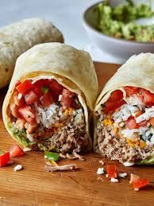

Burrito Recipe

Ingredients
- Beef Burrito Filling
- Plain white rice
- Corn
- Black beans
- Cabbage or lettuce
- Diced tomato
- Red onion
- Cheese
- Coriander/cilantro
Procedure
- In a large cast-iron or other heavy skillet,
ook beef over medium heat until no longer pink; drain.
Stir in taco seasoning; remove from skillet and set aside.
Wipe skillet clean.
- In a small saucepan, cook refried beans over medium-low
heat until heated through,
2-3 minutes.
- Spoon about 1/3 cup of beans off-center on each tortilla;
top with 1/4 cup beef mixture. Sprinkle with cheese. Fold
sides and ends of tortillas over filling and roll up.
- In same skillet over medium-high heat, brown burritos in oil on all sides.
Serve with sour cream and salsa.